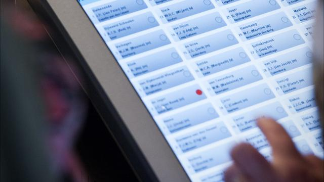
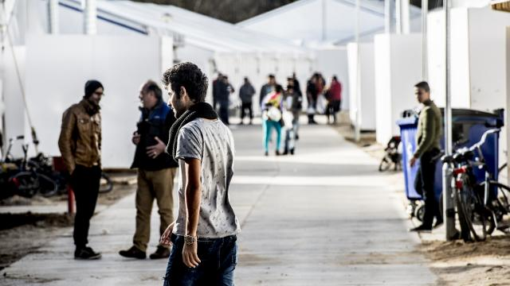

Nieuws 14 maart
VVD wil weer elektronisch stemmen
De VVD dient een initiatiefwet in bij de Tweede Kamer om stemmen via een computer mogelijk te maken.
De stemcomputers zouden wat indiener Joost Taverne betreft eind 2017 voor het eerst gebruikt kunnen worden, tijdens de raadsverkiezingen voor gemeenten die worden heringedeeld, zo meldt de NOS.
In 2006 werd voor het laatst met de stemcomputer gestemd. Die werd daarna vanwege fraudegevoeligheid in de ban gedaan. Volgens Taverne is het gebruik van de stemcomputer nu wel veilig, omdat de stemmen niet digitaal worden opgeslagen, maar worden uitgeprint.
Minister Ronald Plasterk van Binnenlandse Zaken vindt het plan een goed initiatief: "Dit regelt alvast de wettelijke basis voor een experiment. Het moet echter wel veilig en betaalbaar kunnen, de onderzoeken naar haalbaarheid lopen nog."
PvdA
PvdA-Kamerlid Astrid Oosenbrug laat tegenover NU.nl weten "positief kritisch" te zijn over het voorstel van Taverne.
"De democratische controle is leidend. De computers mogen niet hackbaar zijn. Dat is een grote opgave, maar niet onmogelijk", aldus Oosenbrug. "En als het stemmen en tellen via computers zorgt voor een veel lagere foutmarge dan vind ik het wel de moeite waard, ook als het wat kost."
Volgens Oosenbrug kan er met computers voor gezorgd worden dat ook mensen die moeite hebben met stemmen kunnen worden geholpen, bijvoorbeeld via grafische hulpmiddelen.
De PvdA'er stelt daarnaast niks te zien in de mogelijkheid om Nederlanders die in het buitenland wonen via internet te laten stemmen. "Daarvoor ken ik te veel mensen die verstand hebben van internetbeveiliging. Dat is vrijwel onmogelijk. Misschien komen we daar wel nooit."
Tweede Kamer
Taverne diende in 2012 ook al een wetsvoorstel om de stemcomputer weer terug te brengen. Het nieuwe voorstel komt grotendeels overeen met een rapport van de commissie-Van Beek van eind 2013. Daarin werd geadviseerd om vanaf 2018 te gaan werken met de 'stemprinter'.
Eerder heeft de Tweede Kamer zich al positief uitgelaten over het terugbrengen van de stemcomputer. Het ministerie van Binnenlandse Zaken doet ook al onderzoek naar de herinvoering van elektronisch stemmen.
Noord-Korea ontkent betrokkenheid bij hackaanval Zuid-Korea
Noord-Korea ontkent Zuid-Koreaanse overheidsfunctionarissen gehackt te hebben.
Volgens Zuid-Korea voert Noord-Korea steeds meer hackaanvallen uit, en slaagde het land er onlangs in om veertig smartphones van overheidsfunctionarissen te hacken.
Noord-Korea zegt echter niets met de aanval te maken te hebben. Volgens de Noord-Koreanen heeft Zuid-Korea de aanval bedacht om steun te krijgen voor een controversiële anti-terreurwet.
"We kunnen deze provocatieve en gruwelijke beschuldigingen niet zomaar negeren", aldus een opiniestuk in de Noord-Koreaanse staatskrant.
Noord-Korea wordt wel vaker gelinkt aan hackaanvallen op Zuid-Korea en de VS. De bekendste daarvan is wellicht de grote Sony-hack in 2014, waarbij gevoelige informatie van het bedrijf en zijn medewerkers is gelekt. Noord-Korea heeft altijd enige betrokkenheid ontekend.
Kwart asielaanvragen 2016 uit veilig land
Een kwart van de asielaanvragen die dit jaar al zijn gedaan, is afkomstig van mensen uit een veilig land als met name Albanië, Servië of Kosovo. Zij kunnen inmiddels sneller worden teruggestuurd dan voorheen.
Ook begin 2016 vormden de Syriërs echter weer de grootste groep onder de aanvragers. Duizend Syriërs deden voor het eerst een aanvraag. Dat blijkt uit cijfers van de Immigratie- en Naturalisatiedienst (IND).
In totaal zijn de eerste negen weken ongeveer 6300 asielaanvragen gedaan. Het gaat om circa 4400 eerste asielaanvragen, 300 herhaalde asielaanvragen en 1600 ingereisde nagekomen gezinsleden van mensen die al een asielvergunning in Nederland hadden.
"Het aantal aanvragen van mensen afkomstig uit veilige landen is van 5 tot 10 procent in 2015 gestegen naar inmiddels 25 procent", aldus Rob van Lint, directeur van de IND maandag tijdens de presentatie van de jaarcijfers in Den Haag. "Hierom is het zaak die aanvragen zo snel mogelijk te behandelen. Dit kan binnen een paar weken zijn afgerond."
Het is volgens Van Lint niet zo dat deze mensen nooit een verblijfsvergunning krijgen. "In sommige individuele gevallen kan er een uitzondering worden gemaakt." Waarom het aantal aanvragen uit veilige landen is toegenomen weet de IND-directeur niet, "daar is het nog te pril voor."
2015
Afgelopen jaar dienden bijna 59.000 mensen een asielverzoek in. Circa 70 procent van de aanvragen werd ingewilligd.
Het waren vorig jaar vooral Syriërs (circa 27.700) en Eritreeërs (circa 8400) die naar Nederland kwamen. Door de grote toeloop moeten asielzoekers langer wachten tot de IND hun verzoek in behandeling kan nemen: inmiddels zo'n zeven maanden.